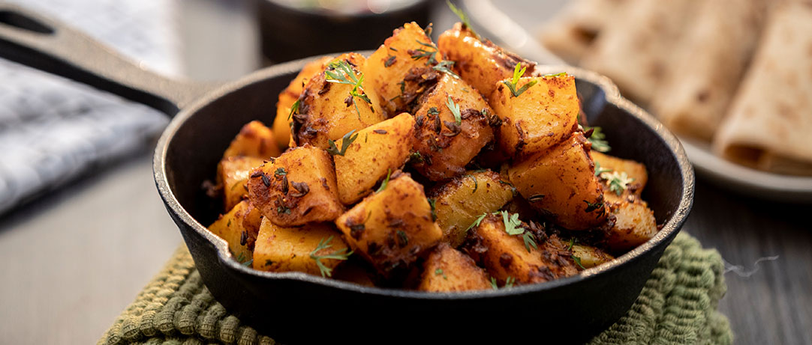

Jeera Aloo
Ingredient
- Oil 2 tablespoons.
- Red Chilli Powder 1/2 tablespoons.
- Jeera 1 tablespoon.
- Maggi Masala-ae-Magic 1 sachet.
- Salt to taste.
- Potatoes 500 grms, boiled & cut into 1 inch cubes.
- Coriander Leaves 2 tablespoons, chopped.

Methods
- Heat the oil in a karachi and add the jeera. Once they
start to splutter, add the red chilli powder and fry
for half a minute.
- Add the potatoes and mix well. Saute for 2-3 minutes
and then add salt to taste.
- Add Maggi Masala-ae-Magic, mix it well and saute for
2 minutes. Garnish with Coriander Leaves and serve hot.